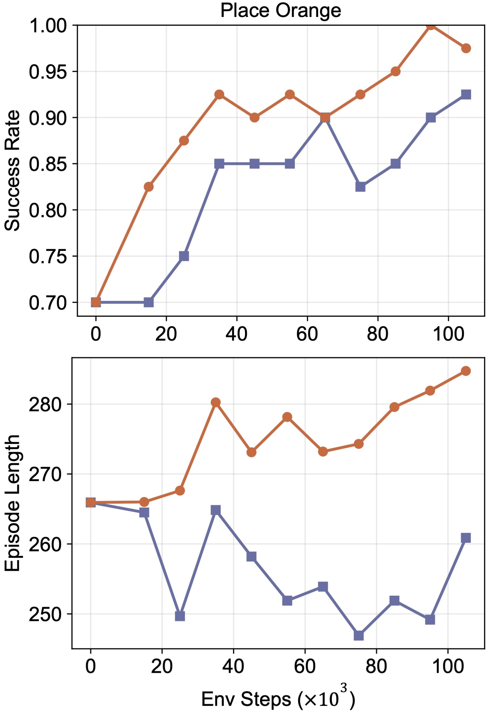
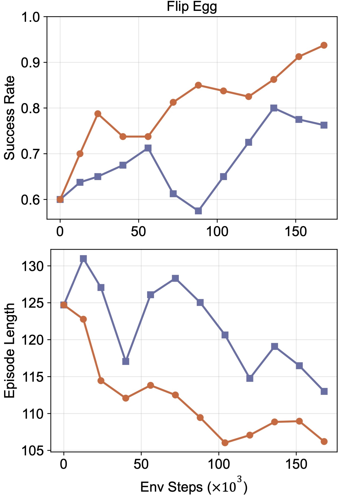
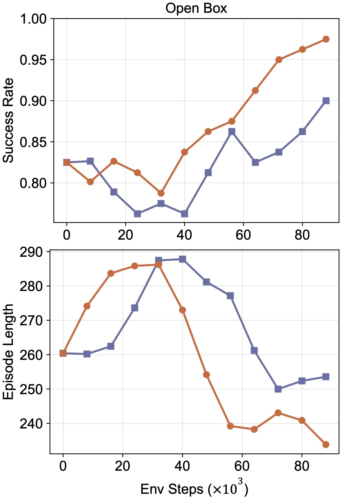
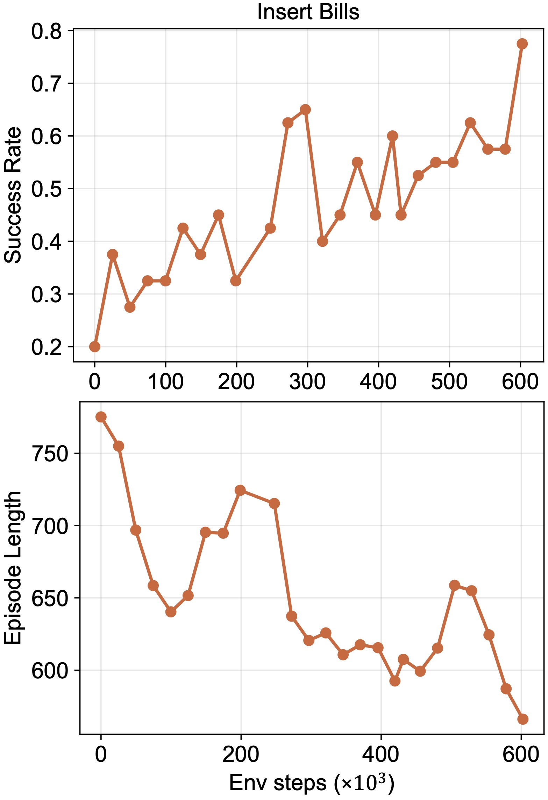
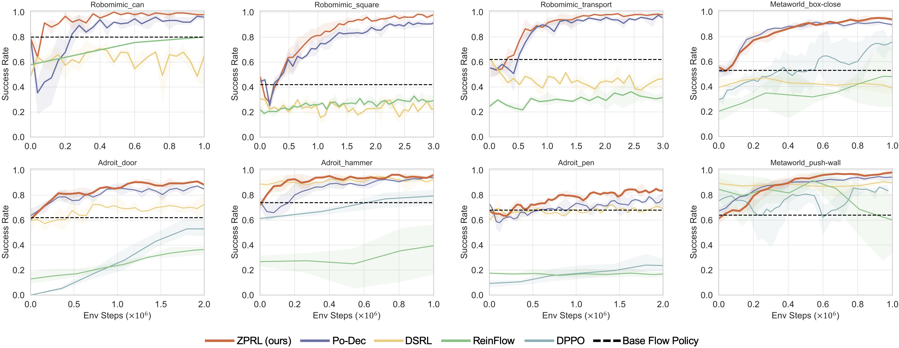
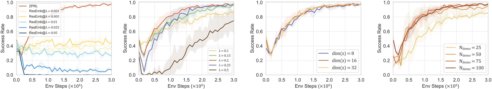
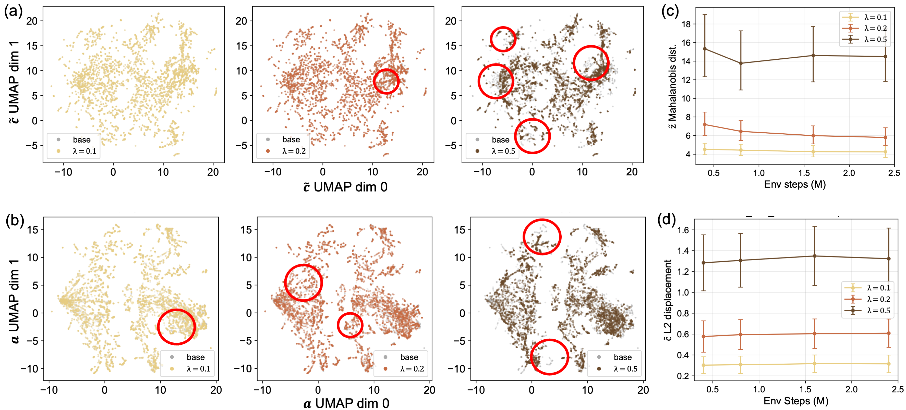

We run ZPRL on four real-world tasks: place orange, flip egg, open box, and insert bills, as well as some variants of these tasks for robustness tests.
We present three longer real-world deployment demos to showcase the full task execution in realistic settings, including cooking a raw egg before flipping it, opening a box to retrieve the flower inside, and inserting paper bills into a wallet. These videos are included in the teaser video above.
(a) Flip Egg in a Real Kitchen
(b) Open Box and Retrieve Flower
(c) Insert Bills after Disturbance
We evaluate the four tasks over 40 trials per task and show representative rollouts as well as training curves below to illustrate policy performance.
(a) Place Orange
(b) Flip Egg
(c) Open Box
(d) Insert Bills




We further evaluate robustness under task-specific perturbations. Each task is paired with two stress tests to reveal whether the policy remains stable under distribution shifts and external disturbances.
Disturbance
Model Variation
Color Robustness
Disturbance
Disturbance
OOD Position
Distractors
Disturbance
ZPRL finetunes a base flow policy with high sample efficiency and reaches competitive or superior final performance across eight tasks from three benchmarks. All base policies are trained on the same offline dataset per task, a mixed-quality dataset consisting of 50 or 100 trajectories.

We ablate key design choices of ZPRL, including whether the bottleneck is used, the perturbation scale λ, the dimension of z, and the offline data size.

Takeaway:
We visualize how ZPRL changes decoded features and actions during online RL using UMAP, and quantify how larger perturbation scales λ push the latent and the feature further out of distribution.

Takeaway:
Our work has drawn inspiration from the following wonderful projects.
Diffusion Policy adopts diffusion models to capture the complex distribution of observation-action pairs in robot datasets.
SOE leverages VIB in iterative imitation learning to constrain the exploration on the manifold of valid actions.
Policy Decorator introduces a strong residual RL approach with progressive exploration and control scale.
RL-100 builds a real-world RL system achieving performant robotic manipulation on several challenging tasks.